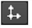
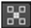

|
连接类型 |
连接名称 |
函数 |
|
输入 |
轴 |
一个可选的轴节点，作为空对象工作，卡片可以作为父对象。如果连接，可以使用轴转换控件来控制 Card3D 节点。例如，旋转轴节点将旋转 Card3D 节点。如果要使用相同的轴节点控制多个节点，这将非常有用。 |
|
凸轮 |
用于查看卡的可选相机节点。 |
|
|
未命名 |
要放在卡上的图像。 |
|
控制 (UI) |
旋钮 (脚本) |
默认值 |
函数 |
|
Card3D 标签 |
|||
|
|
File_menu |
N/A |
文件菜单允许您: • 导入 chan 文件 -导入通道文件，并根据该文件中的转换数据移动该卡。通道文件包含给定镜头中每个动画帧的一组笛卡尔坐标。您可以使用 Nuke 或 3D 跟踪软件 (如 3D 均衡器、 Maya 或 Boujou) 创建和导出它们。 • 导出 chan 文件 -将应用于卡的转换数据导出为通道文件。这是艺术家之间共享设置的有用方法。 |
|
 |
Snap_menu |
N/A |
捕捉菜单允许您: • 匹配选择位置 -将卡片的位置与您在查看器中的 3D 几何对象上选择的任何顶点相匹配。 • 匹配选择位置，方向 -将卡片的位置和方向与您在查看器中的 3D 几何对象上选择的任何顶点相匹配。 • 匹配选择位置、方向、大小 -将卡片的位置、方向和大小与您在查看器中的 3D 几何对象上选择的任何顶点相匹配。 要选择查看器中的顶点，需要将 3D 对象附加到查看器并按 标签 激活观众的 3D 模式。然后，单击  要激活 顶点选择 工具，并通过在对象上拖动遮罩来选择顶点。 |
|
变换顺序 |
Xform_order |
SRT |
选择 Nuke 执行缩放、旋转和平移的顺序 ( S 意味着规模, R 旋转，和 T 翻译)。顺序会影响结果。 |
|
旋转顺序 |
Rot_order |
ZXY |
选择 Nuke 在各个轴上执行旋转的顺序 ( X , Y ,和 Z )。 |
|
翻译 xyz |
翻译 |
0,0，-1 |
在 x 、 y 和 z 轴上转换卡。 或者，您可以在查看器中转换覆盖上的任何轴上拖动。 |
|
旋转 xyz |
旋转 |
0,0，0 |
在 x 、 y 和 z 轴上旋转卡。这对欺骗视角很有用。 或者，您可以按 Ctrl / Cmd 在查看器中，在转换覆盖上的任何轴上拖动时。 |
|
缩放 xyz |
缩放 |
1 、 1 |
在 x 、 y 和 z 轴上缩放卡。 将其中一个设置为负值将沿该轴反转输入图像。 |
|
均匀刻度 |
Uniform_scale |
1 |
在 x 、 y 和 z 上同时缩放帧。这有效地将 缩放 xyz 值。 |
|
倾斜 xyz |
倾斜 |
0,0，0 |
在 x 、 y 和 z 轴上倾斜卡。 |
|
枢轴 xyz |
枢轴 |
0,0，0 |
当您对卡的位置、缩放和旋转进行更改时，这些更改将从卡的原点或轴的位置发生。的 枢轴 x , y ,和 z 控件允许您偏移枢轴点，并将其移动到你喜欢的任何地方 -- 您甚至可以将其移动到卡外。随后将相对于新的枢轴点位置进行局部变换。 也可以通过按来定位枢轴点 Ctrl / Cmd Alt 在查看器中拖动时。 |
|
局部矩阵 |
|||
|
指定矩阵 |
UseMatrix |
禁用(disabled) |
启用此控件可以指定要转换的对象的矩阵值，作为在上面设置变换、缩放、倾斜和枢轴值的替代方法。 |
|
矩阵 |
矩阵 |
N/A |
矩阵显示对象的变换、旋转、缩放、倾斜和枢轴控件的值。 检查 指定矩阵 然后从另一个对象中复制或拖放矩阵值以应用这些值，例如，如果要对齐场景中的对象。 |
|
几何 |
|||
|
透镜入焦 |
Lens_in_focal |
1 |
在卡片上拍摄照片的相机的焦距。该卡被缩放到正确的大小，以便在距离 Z ,卡片填满了这个视野。 |
|
镜头输入光圈 |
Lens_in_haperture |
1 |
在卡片上拍照的相机的水平光圈。该卡被缩放到正确的大小，以便在距离 Z ,卡片填满了这个视野。 |
|
渲染参数 |
|||
|
输出格式 |
格式 |
根.格式 |
选择要输出序列的格式。如果格式尚不存在，您可以选择 新 从头开始创建新格式。默认设置, 根.格式 ,将图像大小调整为 项目设置 对话框。 |
|
过滤器 |
filter |
立方 |
选择将像素从原始位置重新映射到新位置时要使用的过滤算法。这允许您避免图像质量问题，特别是在帧的高对比度区域 (高度锯齿或锯齿, 如果没有过滤像素并保留其原始值，则可能会出现边缘)。 • 冲动 -重新映射的像素携带其原始值。 • 立方 -重新映射的像素接收一些平滑。 • 钥匙 -重新映射的像素会得到一些平滑，加上轻微的锐化 (如曲线的负 y 部分所示)。 • 西蒙 -重新映射的像素会获得一些平滑，加上中等锐化 (如曲线的负 y 部分所示)。 • 里夫曼 -重新映射的像素获得一些平滑，加上显著的锐化 (如曲线的负-y 部分所示)。 • 米切尔 -重新映射的像素接收一些平滑，加上模糊来隐藏像素化。 • 帕森 -重新映射的像素接收所有过滤器的最大平滑。 • 缺口 -重新映射的像素接收平坦平滑 (倾向于隐藏莫尔图案)。 • Lanczos4 , Lanczos6 ,和 Sinc4 -重新映射的像素接收锐化，这对于缩小缩放很有用。 Lanczos4 提供最少的锐化和 Sinc4 最多的。 |
|
夹子 |
夹子 |
禁用(disabled) |
当使用使用锐化的过滤器时，例如 里夫曼 和 Lanczos ,你可能会看到光环效应。如有必要，请检查 夹子 来纠正这个问题。 |
|
黑色外面 |
Black_outside |
已启用 |
这将呈现为图像边界外的黑色像素，使元素更容易在另一个元素上分层。如果取消选中此控件，外部区域将用图像序列的最外层像素填充。 在大多数情况下，你应该保持 黑色外面 检查过了但是，您可能希望关闭此选项以进行相机抖动，或者希望使用类似的形状对输出进行纹理映射或相交。 注意: 启用 黑色外面 如果没有 alpha，还会添加一个覆盖输入图像区域的实心 alpha。 |
|
Motionblur |
Motionblur |
0 |
设置运动模糊采样的数量。值为 1 将为大多数序列产生合理的结果。 增加该值以产生更多的样本以获得更高的质量，或者减少该值以缩短处理时间。值越高，结果越平滑。 |
|
快门 |
快门 |
0.5 |
输入运动模糊时快门保持打开的帧数。例如，值 0.5 对应于半帧。增加值会产生更多模糊，减少值。 |
|
快门偏移 |
Shutteroffset |
开始 |
此值控制快门相对于当前帧值的行为。它有四个选项: • 集中 -将快门围绕当前帧居中。例如，如果将 “快门” 值设置为 1，并且当前帧为 30，则快门将从帧 29,5 保持打开，直到 30,5。 • 开始 -在当前帧处打开快门。例如，如果将快门值设置为 1，并且当前帧为 30，则快门将从帧 30 保持打开。 • 结束 -在当前帧处关闭快门。例如，如果将 “快门” 值设置为 1，并且当前帧为 30，则快门将从帧 29 到 30 保持打开状态。 • 自定义 -在您指定的时间打开快门。在下拉菜单旁边的字段中，输入要添加到当前帧中的值 (以帧为单位)。要在当前帧之前打开快门，请输入负值。例如，值为-0.5 将在当前帧之前半帧打开快门。 |
|
Shuttercustomoffset |
0 |
如果 快门偏移 控件设置为 自定义 ,此字段用于通过将快门添加到当前帧来设置快门打开的时间。值以帧为单位，因此-0.5 将在当前帧之前半帧打开快门。 |
|